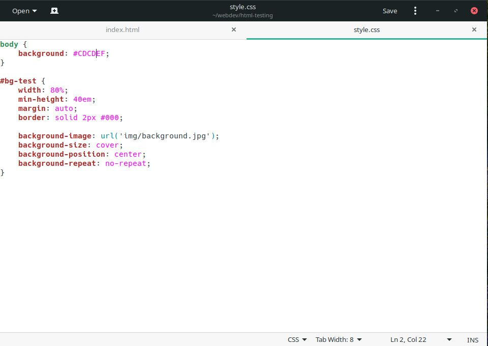
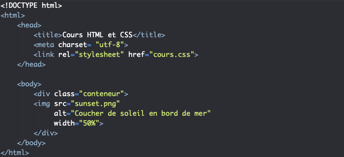
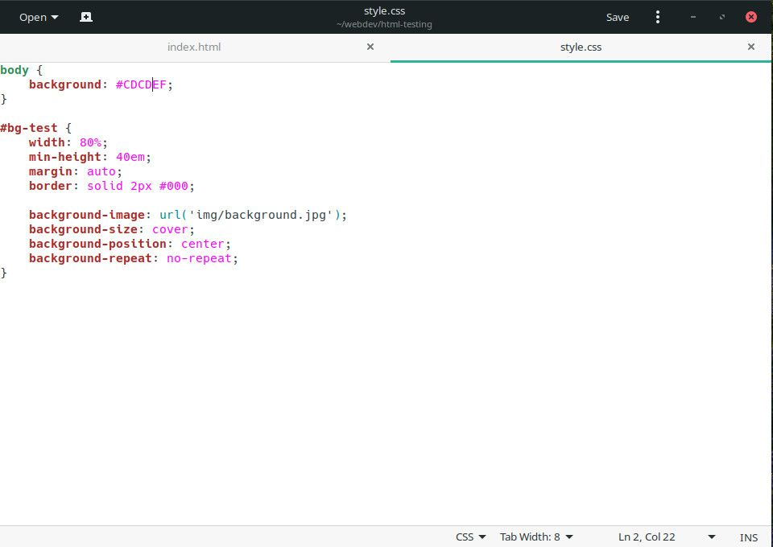
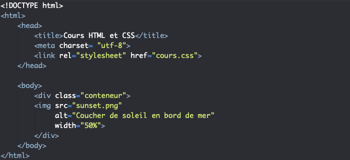

HTML
HTML signifie « HyperText Markup Language » qu'on peut traduire par « langage de balises pour l'hypertexte ». Il est utilisé afin de créer et de représenter le contenu d'une page web et sa structure. D'autres technologies sont utilisées avec HTML pour décrire la présentation d'une page (CSS) et/ou ses fonctionnalités interactives (JavaScript). L'« hypertexte » désigne les liens qui relient les pages web entre elles, que ce soit au sein d'un même site web ou entre différents sites web. Les liens sont un aspect fondamental du Web. Ce sont eux qui forment cette « toile » (ce mot est traduit par web en anglais). En téléchargeant du contenu sur l'Internet et en le reliant à des pages créées par d'autres personnes, vous devenez un participant actif du World Wide Web. Le langage HTML utilise des « balises » pour annoter du texte, des images et d'autres contenus afin de les afficher dans un navigateur web.
 


